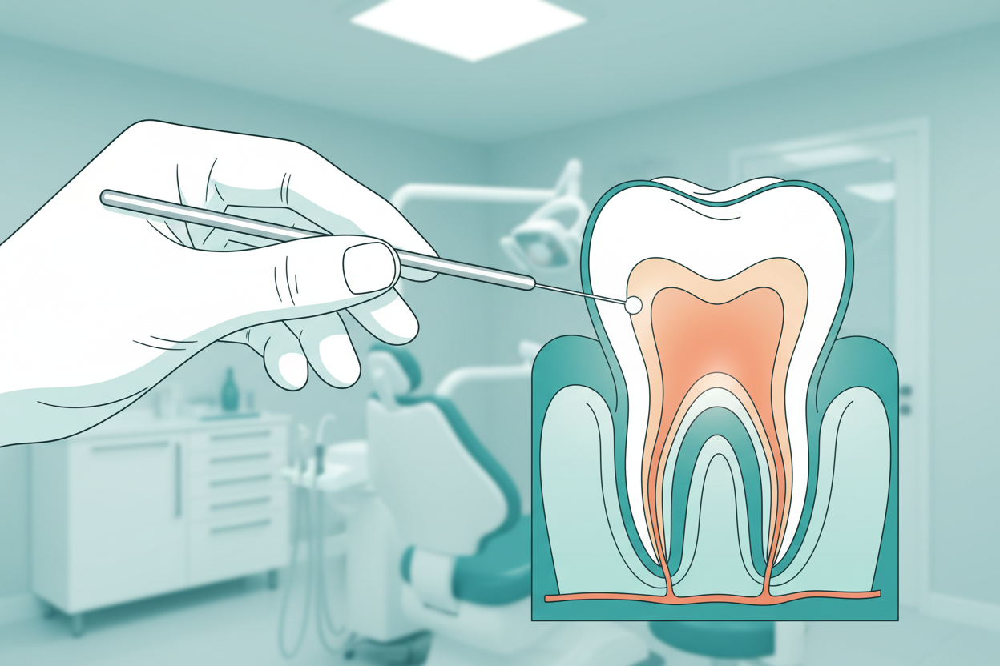

14 Oct 2026 · 5 min read · By Dr. Anish Bharti, M.D.S (Prosthodontics)
If a dentist has told you that you need a root canal, you probably have two questions. Will it hurt, and what will it cost? Both deserve honest answers, because root canals have a reputation built on treatments done decades ago, without proper anaesthesia, by general practitioners filling in for specialists.
What a root canal actually is
Inside every tooth is a soft core of nerves and blood vessels. When decay goes deep enough, or a crack lets bacteria in, that core gets infected. The body cannot fix an infection inside a sealed tooth, so the nerve dies and the infection spreads toward the jaw. A root canal removes the infected tissue, disinfects the space inside the roots, and seals it. The tooth stays in your mouth, doing its job, for years afterwards.
Does it hurt?
This is the part people fear most, so here it is straight. The procedure itself is done under local anaesthesia and the numbness is checked before any work starts. Most patients describe the feeling as pressure rather than pain, similar to a long filling appointment. The pain that brought you in usually starts settling within a day or two of the first visit. A tooth that needs a root canal already hurts; the treatment is what makes it stop.
How many visits
Modern single-visit root canals are common for front teeth and straightforward cases. Molars with curved roots, or teeth with active infection and swelling, are safer over two or three visits so the disinfection can work properly between appointments. Your dentist should be able to tell you which category your tooth falls into after an X-ray, before treatment starts.
Cost in Kolkata
Across Kolkata, root canal treatment typically runs between ₹3,000 and ₹8,000 per tooth depending on which tooth it is and how complex the root anatomy turns out to be. Front teeth sit at the lower end because they have a single root. Molars have three or four roots and take longer, so they sit at the upper end. A cap or crown placed afterwards usually adds ₹4,000 to ₹12,000 depending on the material. Clinics vary, so ask for the full figure including the crown before you commit. At our New Alipore clinic we put the complete estimate in writing at the diagnosis stage, before any work begins.
When a crown is genuinely needed
A root-canal-treated molar loses its internal moisture and becomes brittle over the years. Chewing forces on a back tooth are enormous, and an unprotected molar can crack through the middle, which often leaves nothing to save. For back teeth, a crown is sound planning. For front teeth, where biting forces are lighter, a well-built filling is often enough. If a clinic pushes a crown on every single case without explaining why, ask them to explain the difference for your specific tooth.
When extraction makes more sense
Sometimes a tooth is too broken to save, and a root canal would only delay the inevitable at significant cost. A cracked root, decay reaching below the gumline, or a tooth with almost nothing left above the gum are situations where removal followed by an implant or bridge gives a better long-term result. A good clinic tells you this early rather than after three visits of treatment.
If you are in or around New Alipore and sitting on tooth pain, getting it looked at early is the cheapest decision available. Small cavities become root canals; root canals become extractions. The prices rise at every step, and so does the time in the chair.
Tooth pain that won't settle?
Book a check-up. We confirm whether the tooth can be saved before we recommend anything.